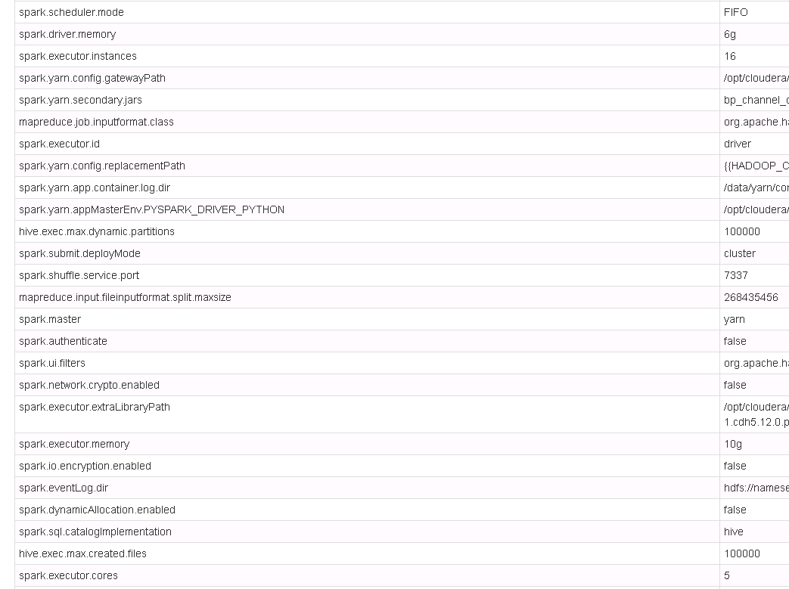
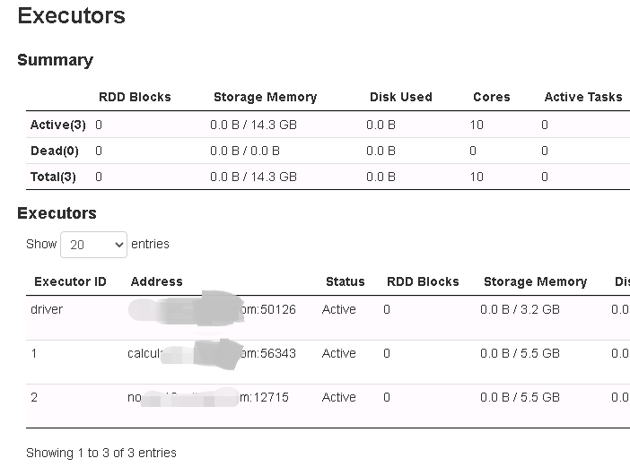
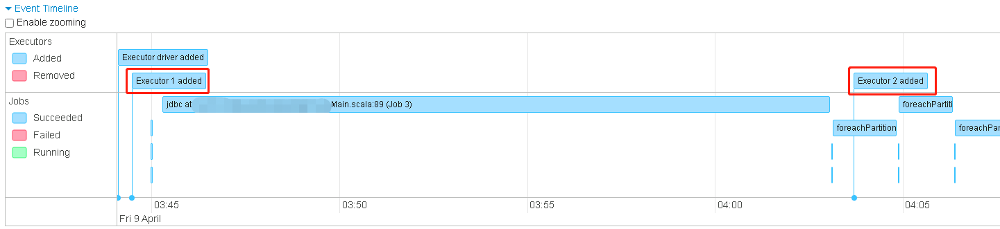

Executors的数量
Web UI “Executors”页签中显示的数量少于“Environment”页签中显示的配置数量：

很明显，配置了16个executors，“Executors”页签只有两个：

“Jobs”页签也只显示加入了两个executos：

一般情况下，都是启动了指定数量的executors之后才会开始执行jobs，但是从Event Timeline中看到的情况是加入第一个executor之后便开始了Job执行。难道是除了driver，只要有一个executor就开始执行job吗？？
这是为什么呢？摸不着头脑……
不知道和没有执行SparkSession.stop()有没有关系？！仔细检查job，发现还是挺普遍的问题……
难道是，因为获取SparkSession时使用了getOrCreate，导致Job获取到了其它Job的创建的Sparksession的原因？？？？？进而只会在执行过程中继续增加executor？？如果资源紧缺，就会导致分配不到指定的num-executors？？
难道num-executors只是表示最大executors数量？？？还是说 num-executors 与 YARN 的调度策略有关系（公平调度、FIFO）。